<!doctype html>
<html lang="es">
<head>
<meta charset="utf-8">
<title>CONTECS 2026 · Marco</title>
<link rel="stylesheet" href="estilo.css">
<link rel="stylesheet" href="https://fonts.googleapis.com/css2?family=Bebas+Neue&display=swap">
<style>
/* ?layout= pres1 | pres1-inv | pres2 | pres2-inv | cams2 | cams2-inv | pres | cam
   (la tarjeta "Ponencia presentada" ahora es una fuente aparte: ponencia.html)
   &id=3      ponencia a mostrar (si no se pone, usa la "ponencia en curso" de datos.js)
   &borde=0   sin borde en los huecos
   &logoabajo=1 mantiene también el logo abajo a la derecha (por defecto sube al recuadro)
   &vivo=0    no recargar datos automáticamente                                        */
  :root{--fondo-marco:#053a1c;--cond:"Bebas Neue","Oswald","Arial Narrow",Impact,sans-serif}
  .capa{position:absolute;inset:0}
  .fm{position:absolute;inset:0;background:var(--fondo-marco);overflow:hidden}
  .fm .diag{position:absolute;height:70px;width:420px;background:rgba(0,0,0,.35);transform:skewX(-40deg)}
  .fm .diag.v{background:color-mix(in srgb,var(--verde-400) 30%,transparent)}
  .fm .puntos{position:absolute;width:520px;height:300px;
    background-image:radial-gradient(circle,color-mix(in srgb,var(--verde-400) 55%,transparent) 2.4px,transparent 3px);background-size:16px 16px;
    -webkit-mask-image:radial-gradient(ellipse at center,#000 0%,transparent 70%);mask-image:radial-gradient(ellipse at center,#000 0%,transparent 70%);
    opacity:.55;animation:respira 6s ease-in-out infinite alternate}
  @keyframes respira{from{opacity:.35;transform:scale(.97)}to{opacity:.65;transform:scale(1.03)}}
  .borde{position:absolute;border-radius:14px;box-shadow:0 0 0 3px color-mix(in srgb,var(--verde-400) 70%,transparent),0 14px 40px rgba(0,0,0,.45)}

  /* Etiqueta con nombre sobre cada cámara */
  .tagcam{position:absolute;display:flex;align-items:stretch;filter:drop-shadow(0 8px 20px rgba(0,0,0,.5));animation:tagIn .8s .6s cubic-bezier(.16,1,.3,1) both}
  .tagcam i{width:12px;background:var(--verde-400)}
  .tagcam span{background:rgba(4,23,13,.9);padding:8px 20px 8px 16px;font-family:var(--cond);font-size:34px;letter-spacing:.04em;line-height:1}
  @keyframes tagIn{from{clip-path:inset(0 100% 0 0)}to{clip-path:inset(0 0 0 0)}}

  /* Banner de ponencia (estilo Canva) */
  .banner{position:absolute;left:0;top:850px;height:190px;width:1000px;display:flex;animation:eIzq .9s .2s cubic-bezier(.16,1,.3,1) both}
  .banner .cuadro{width:70px;background:var(--verde-400);filter:brightness(.75)}
  .banner .cuerpo{flex:1;background:#032b13;clip-path:polygon(40px 0,100% 0,100% 100%,40px 100%,0 50%);margin-left:-6px;padding:20px 40px 18px 80px;display:flex;flex-direction:column;justify-content:center;overflow:hidden}
  .banner .k{font-size:20px;font-weight:800;letter-spacing:.28em;color:var(--verde-400)}
  .banner .t{font-family:var(--cond);font-size:72px;line-height:.95;letter-spacing:.01em;white-space:nowrap;overflow:hidden;text-overflow:ellipsis;margin-top:6px}
  .banner .s{font-size:24px;font-weight:600;color:var(--gris);margin-top:6px;white-space:nowrap;overflow:hidden;text-overflow:ellipsis}
  .franja{position:absolute;left:0;top:828px;width:1000px;height:10px;background:linear-gradient(#fff 0 60%,#000 60%);transform-origin:left;animation:barraIn 1s .1s cubic-bezier(.16,1,.3,1) both}
  @keyframes barraIn{from{transform:scaleX(0)}}

  /* Patrocinadores */
  .patro{position:absolute;left:1010px;top:885px;width:420px;height:170px;display:flex;flex-direction:column;justify-content:center;gap:12px;animation:eAba .9s .4s cubic-bezier(.16,1,.3,1) both}
  .patro .lab{font-size:16px;font-weight:800;letter-spacing:.3em;color:var(--verde-400)}
  .logos-pista{display:flex;gap:12px;opacity:0;transform:translateY(16px);transition:opacity .45s,transform .45s}
  .logos-pista.vis{opacity:1;transform:none}
  .logo-p{flex:1;height:96px;background:#fff;border-radius:14px;display:flex;align-items:center;justify-content:center;padding:10px;min-width:0}
  .logo-p img{max-width:100%;max-height:76px;object-fit:contain}
  .logo-p b{color:#053a1c;font-size:17px;font-weight:900;text-align:center;line-height:1.1}

  .logo-der{position:absolute;right:30px;top:885px;width:420px;height:170px;display:flex;align-items:center;justify-content:flex-end;animation:eDer .9s .3s cubic-bezier(.16,1,.3,1) both}
  .logo-der img{width:auto;height:auto;max-width:420px;max-height:130px}
  .logo-der .wordmark{font-size:52px}

  /* Panel lateral (pres1) */
  .panel{position:absolute;border-radius:14px;background:rgba(0,0,0,.28);border:2px solid color-mix(in srgb,var(--verde-400) 40%,transparent);padding:30px;display:flex;flex-direction:column;gap:12px;animation:aparece .9s .5s both}
  .panel .k{font-size:17px;letter-spacing:.25em;color:var(--verde-400);font-weight:800}
  .panel .t{font-family:var(--cond);font-size:50px;line-height:1}
  .panel .h{font-size:22px;color:var(--lima);font-weight:800}
  .panel .n{font-size:26px;font-weight:800;margin-top:auto}
  .panel .c{font-size:19px;color:var(--gris);font-weight:600;line-height:1.35}

  /* Recuadro modificado para logos flotantes ajustados */
  .caja-logo{position:absolute;border-radius:14px;background:rgba(0,0,0,.35);border:2px solid color-mix(in srgb,var(--verde-400) 40%,transparent);padding:0 20px;display:flex;flex-direction:row;align-items:center;justify-content:center;gap:30px;animation:aparece .9s .5s both}
  .caja-logo .marca{display:flex;justify-content:center;align-items:center;}
  
  /* Ajustes de tamaño - CONTECS MÁS GRANDE */
  .caja-logo .marca:nth-child(1) img { height: 85px; width: auto; object-fit: contain; } /* UTP */
  .caja-logo .marca:nth-child(2) img { height: 95px; width: auto; object-fit: contain; } /* FISC */
  .caja-logo .marca:nth-child(3) img { height: 110px; width: auto; object-fit: contain; } /* CONTECS (Agrandado significativamente) */

  .caja-logo .wordmark{font-size:64px}
  
  /* Layout "cam" (cámara completa) */
  .esq{position:absolute;top:40px;left:50px;padding:12px 22px;border-radius:16px;background:rgba(4,23,13,.78);border:2px solid color-mix(in srgb,var(--verde-400) 50%,transparent)}
  .esq img{height:56px;display:block}.esq .wordmark{font-size:30px}
  .vivo{position:absolute;top:44px;right:50px;font-size:22px;background:rgba(4,23,13,.78)}
  @keyframes eIzq{from{transform:translateX(-110%)}}
  @keyframes eDer{from{transform:translateX(120%)}}
  @keyframes eAba{from{transform:translateY(260px)}}
</style>
</head>
<body class="transparente">
<div id="raiz"></div>
<script src="datos.js"></script>
<script src="layouts.js"></script>
<script src="comun.js"></script>
<script>
const {P,$,esc,marca,ticker,expositor,carrusel,vivo,escuchaPrevia,colores} = UT;
let layout = P.get("layout") || "pres1";
if(layout==="dual") layout="pres1";
if(layout==="expositor") layout="cam";

function mascara(huecos){
  const r = 14;
  const rr = ([x,y,w,h]) => `M${x+r} ${y}H${x+w-r}A${r} ${r} 0 0 1 ${x+w} ${y+r}V${y+h-r}A${r} ${r} 0 0 1 ${x+w-r} ${y+h}H${x+r}A${r} ${r} 0 0 1 ${x} ${y+h-r}V${y+r}A${r} ${r} 0 0 1 ${x+r} ${y}Z`;
  const d = "M0 0H1920V1080H0Z" + huecos.map(rr).join("");
  const svg = `<svg xmlns="http://www.w3.org/2000/svg" width="1920" height="1080"><path fill="#fff" fill-rule="evenodd" d="${d}"/></svg>`;
  return `url("data:image/svg+xml,${encodeURIComponent(svg)}")`;
}

function render(){
  colores();
  const D = UT.D, raiz = $("#raiz");
  let h = "";
  if(layout === "cam"){
    h += `<div class="esq" style="animation:eIzq .9s both"><div class="marca" id="marca"></div></div>`;
    h += `<div class="chip vivo" style="animation:eDer .9s both"><span class="punto"></span>EN VIVO</div>`;
    h += `<div class="ticker" id="ticker" style="animation:eAba .9s .2s both"><div class="etiqueta">${esc(D.evento)}</div><div class="msg"></div><div class="reloj"></div></div>`;
    raiz.innerHTML = h; marca($("#marca")); ticker($("#ticker")); return;
  }
  
  // Clonamos la configuración del layout para poder manipular el tamaño del recuadro
  const L_orig = LAYOUTS[layout] || LAYOUTS.pres1;
  const L = JSON.parse(JSON.stringify(L_orig));

  // Aquí forzamos el recuadro para que suba pegado a la cámara
  if(L.panel) {
    let [px, py, pw, ph] = L.panel;
    let nuevaAltura = 145; // Altura precisa para un rectángulo elegante
    
    // ANTES se centraba, AHORA se pega a la parte superior (solo 20px de separación de la cámara)
    let nuevoY = py + 20; 
    
    L.panel = [px, nuevoY, pw, nuevaAltura];
    
    // Ajustamos la máscara recortada de OBS (el borde brillante verde)
    for(let key in L.huecos) {
      let [hx, hy, hw, hh_] = L.huecos[key];
      if(hx === px && hy === py && hw === pw && hh_ === ph) {
        L.huecos[key] = [px, nuevoY, pw, nuevaAltura];
      }
    }
  }

  const huecos = Object.values(L.huecos);
  const m = mascara(huecos);
  
  h += `<div class="fm">
          <div class="diag" style="left:120px;top:-20px"></div><div class="diag v" style="left:560px;top:-30px;width:260px"></div>
          <div class="diag" style="left:1240px;top:862px;width:260px;height:18px"></div>
          <div class="diag" style="left:-160px;top:600px;width:300px;height:240px;background:rgba(0,0,0,.3)"></div>
          <div class="puntos" style="left:-40px;top:860px"></div>
          <div class="puntos" style="left:1120px;top:850px;width:420px"></div>
        </div>`;
  if(P.get("borde") !== "0") huecos.forEach(([x,y,w,hh])=>{ h += `<div class="borde" style="left:${x}px;top:${y}px;width:${w}px;height:${hh}px"></div>`; });

  // Nombres sobre las cámaras (configurables)
  const cams = D.camaras || {};
  ["c1","c2"].forEach(c=>{
    const hu = L.huecos[c]; if(!hu || !cams[c]) return;
    const [x,y,w,hh] = hu;
    h += `<div class="tagcam" style="left:${x+16}px;top:${y+hh-66}px"><i></i><span>${esc(cams[c])}</span></div>`;
  });

  const e = expositor(P.get("id"));
  if(L.panel){
    const [x,y,w,hh] = L.panel;
    
    // Logos insertados con rutas relativas
    h += `<div class="caja-logo" style="left:${x}px;top:${y}px;width:${w}px;height:${hh}px">
            <div class="marca"></div>
            <div class="marca"></div>
            <div class="marca"></div>
          </div>`;
  }
  if(L.chip){
    const [x,y,w,hh] = L.chip;
    h += `<div class="panel" style="left:${x}px;top:${y}px;width:${w}px;height:${hh}px;padding:0 20px;flex-direction:row;align-items:center;justify-content:space-between">
            <div class="chip" style="font-size:18px;padding:6px 16px"><span class="punto"></span>EN VIVO</div>
            <div class="h" style="font-size:22px">${esc(D.hashtag||"")}</div></div>`;
  }
  const logoCaja = !!L.panel && P.get("logoabajo") !== "1";
  h += `<div class="patro" id="patro"${logoCaja?' style="left:1470px"':""}><div class="lab">CON EL APOYO DE</div><div class="logos-pista"></div></div>`;
  if(!logoCaja) h += `<div class="logo-der"><div class="marca" id="marca"></div></div>`;
  raiz.innerHTML = h;
  const fm=$(".fm"); fm.style.webkitMaskImage=m; fm.style.maskImage=m;
  marca($("#marca")); carrusel($("#patro"), 3, 6);
}
render();
vivo(render);
UT.alEvento(d => { if(d.accion === "actual") render(); });
escuchaPrevia(render);
</script>
</body>
</html>